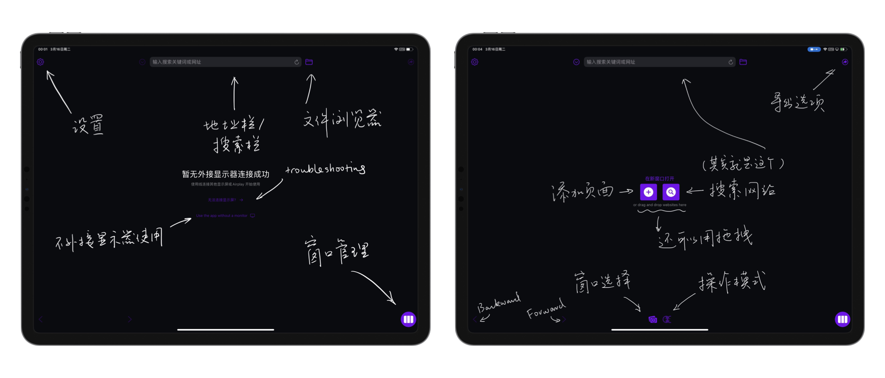
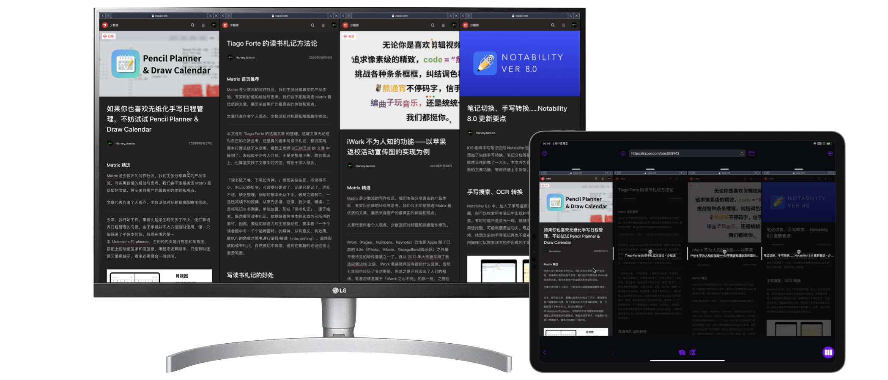
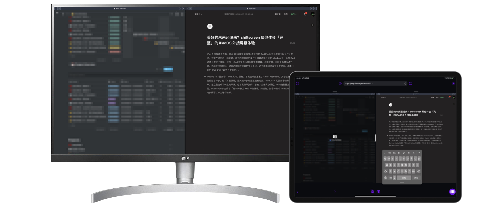
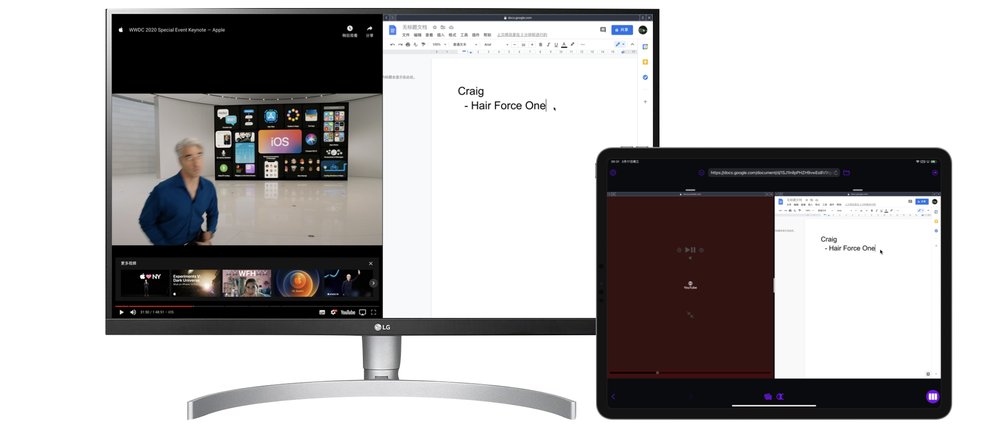
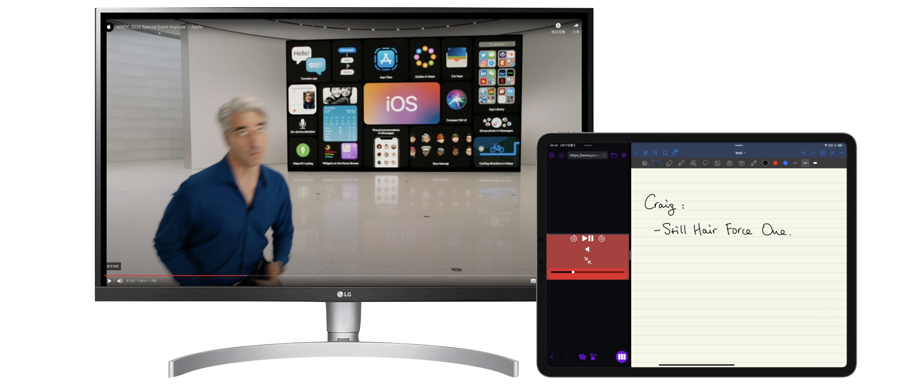
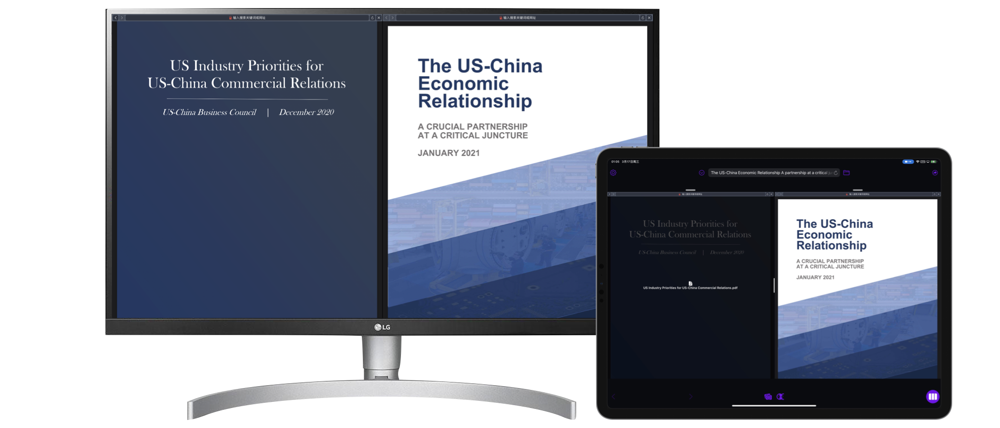

shiftscreen：「完整」的 iPadOS 外接屏幕体验
iPad 外接屏幕这件事，自从 2018 年搭载 USB-C 接口的 iPad Pro 问世以来就引起了广泛关注，大家在试用这一功能时，最大的抱怨恐怕莫过于屏幕两端巨大且无用的 pillarbox 了。虽然 iPad 硬件上做好了准备，但由于 iPad 外接显示器只能镜像屏幕、不能扩展，且缺乏离屏互动方式，也就是没有鼠标、键盘这套解放双眼的交互手段，这个功能始终没有引发波澜，基本只能把 iPad 变成「超大号爱奇艺」。
iPadOS 13.3 更新中，iPad 支持了鼠标，苹果也顺势推出了 Smart Keyboard，又在软硬件上往前迈了一步。但「扩展屏幕」这关键一步却迟迟没有迈出，iPadOS 14 的更新中依然欠奉，总之是造成了一定的不满。但苹果做不到的，总有人会去另辟蹊径。一如随航推出之前，Duet Display 完成了「把 iPad 作为 Mac 外接屏幕」的任务，如今一款叫 shiftscreen 的 app 便可以补上这个缺憾。我手头上正好有 iPad Pro（2018）和 LG 27UL850，于是就下载了下来，把玩了一番。
如何使用
打开 shiftscreen，你可能会很诧异：这怎么就是一个浏览器？诚然，shiftscreen 的工作模式，和浏览起真的没什么两样：顶部一个集成了搜索栏的地址栏，加上一堆意义不明的按钮，构成了这款 app 的全部。但当你接上显示器，shiftscreen 就会进入准备状态，外接显示器也会变成紫色的一片。此时，正中会出现两个按钮，可以从一系列预设的网站中选择，也可以在地址栏中搜索、查找想要打开的网站。

选择好要打开的网站后，外接显示器上就可以全屏显示出当前网页了，比起之前两边粗大的黑边，观感自然好了不少。但是，shiftscreen 主打的并不只是完整的外接显示器使用体验，更重要的是实现了外接显示器上的分屏体验。在 iPad 上点击右下角的紫色按钮，会弹出「窗口管理」选单，点击「创建新的窗口」，再选择「创建新的标签」，就可以实现外接显示器上边到边的完整分屏体验了。用这个方法，最多可以实现同屏四「窗口」，大小也可以在 iPad 上进行调整。而 shiftscreen 又支持两个「虚拟桌面」，这也就意味着，你可以使用下方的窗口切换按钮，一键在外接显示器上的八个「窗口」中自如切换。

既然用上了外接显示屏，此时最自然的交互方式就是用上键盘和鼠标 / 触控板了。接上之后，整个使用体验与电脑外接显示器不能说没有区别，但也几乎所剩无几。本文的引子部分，就是用 shiftscreen 在外接显示器上写成的。虽说 iPad 本身也可以在 Safari 中用少数派编辑器写稿，但毕竟显示器的显示范围没有得到充分利用，而 shiftscreen 则补上了这个缺憾。

shiftscreen 同时还支持 iPhone。如果你有条件将 iPhone 接到显示器上，那么 iPhone 变身「桌面操作系统」也不是个梦了。此时，你可以把 iPhone 用作触控板，控制光标移动。但我手头上没这个条件，因而未能尝试。除了有线接入，shiftscreen 还支持 AirPlay。如果家中正好有 Apple TV，无需一堆头咬尾的转接线，便能体会到大屏带来的新奇体验。
在显示器上使用时，你可能会注意到，此时的鼠标光标不是 iPadOS 规定的小圆点，而是一个与 macOS 别无二致的箭头。虽然这个箭头无法根据上下文变换形态，但确实带来了一种「桌面操作系统」的错觉。当然，如果你偏爱 iPadOS 的小圆点，可以在 shiftscreen 的设置菜单中更改。设置菜单中，你还可以调整网页的默认缩放比例、外接显示器显示帧率等。
除了 Office、Google Docs、iWork、Slack 这些干活用的软件，shiftscreen 还能实现外接显示器观看视频。只需打开视频网站，点击界面下方右侧的切换控制按钮，就可以把视频网站变成专门的控制页面，内容则依然在显示器上播放，防止切换标签页而导致视频挂到后台停止播放。

shiftscreen 甚至还支持多任务。在 iPad 上，先打开 shiftscreen，再将其他 app 拖入窗口制造分屏，将 shiftscreen 放在左侧三分之一，便可以在不耽误外接显示屏的情况下，继续使用 iPad 做其他更适合触控的事情了。结合前面提到的视频播放，你就可以把想要观看的网课用 shiftscreen 放在大屏幕上，再用本地分屏打开笔记软件，边看边记，还能用 shiftscreen 的视频控制界面随时方便暂停、步进。

最后，除了打开网页，shiftscreen 还可以调用 iPadOS 的文件选择界面，打开本地文件，和网页一起并排放。

原理、缺点和展望
看完了 shiftscreen 的诸多特性，你可能不禁会问：
这 app 是怎么绕过苹果做到外接显示器全屏显示加分屏的？
其实说来也简单。分屏的部分实现不算太难；最有意思的地方其实是「在外接显示器上全屏」。如果你用过 iPad 加外接显示器，就会知道有一种情形，可以让 iPad 充分利用外接显示器的显示范围，那就是播放视频。而这也是 shiftscreen 实现全屏显示的奥秘所在。如果你之前又恰好用过 Duet Display，就可能知道，Duet Display 之所以能在随航面世之前实现「把 iPad 作为 Mac / PC 的显示器」，就是用「诱骗创建软件桌面——把操作压缩成视频——在 iPad 端 app 播放视频」这个思路。这也正是为什么 Duet Display 和 shiftscreen 都需要在前台运行才能使用（因为这样才能一直放视频），都提供了画质帧率选项（为的就是让用户在视频传输的质量和效率间做取舍，从而达到利用外接显示屏的目的）。
但既然是第三方的解决方案，瑕疵自然是在所难免的，以下简述几条。
- 使用体验，例如光标不能根据上下文变化、本地缩放比例发生变化后光标跟踪速度也会随之变化、打开文件不支持中文编码会变乱码。这些都体现出这款 app 仍处在一个较早期的阶段。
- 软件非原生解决方案，实际运行就是在放视频，因而效能不甚理想。其实这个问题在 Duet 上也有体现。虽然可以通过线连，但分辨率、帧率和响应速度都会受到影响，Mac / PC 本身也会因为额外运算而备受压力。
- 最大的问题在于，shiftscreen 本质上就是一款支持标签页分屏的浏览器，只支持 web app 意味着如果你的工作流中每包括一款 web app 覆盖不到的 app，那 shiftscreen 便会鸡肋一分；分屏浏览器则意味着同时支持的最大 web app 打开数有限，如果需求超过了 8 个窗口，那也超出了 shiftscreen 的能力范围。
话虽如此，web app 包括 PWA 依然是在不断发展的。Apple、Google、Microsoft 的主要在线办公服务都有网页端，Slack、Trello、Evernote、Airtable 等协作软件更不必提，就连编辑本文所用的少数派编辑器，也是以网页形式存在的1。网页能做到的事情，理论上来讲只会更多，不会更少。当此时机，shiftscreen 横空出世，也算是顺应了潮流、把握了潮流，让可用性在 iPadOS 的沙盒之中有了质的飞跃。虽然 shiftscreen 比起 shift，更像是一个 makeshift，但起码展现出了客观条件不允许的情况下，开发者用一切手段，将这一大家呼声极高的功能努力实现的探索精神。如果你有给 iPhone / iPad 外接显示器的手段，如果你的工作流纯用 web app 可以搞定，如果你也想尝鲜，那 shiftscreen 也不失为一个选择。否则，还是等苹果画完这张一定会有个说法的饼吧。
欢迎将您的想法、评论、意见、建议发送至 harveyjanson@icloud.com，请注明「讨论」字样，我会尽量回复。
- 1.没有催更独立 app 编辑器的意思。 ↩
shiftscreen：「完整」的 iPadOS 外接屏幕体验
http://harveyjanson.github.io/2021/03/17/2021-03-17-shiftscreen/